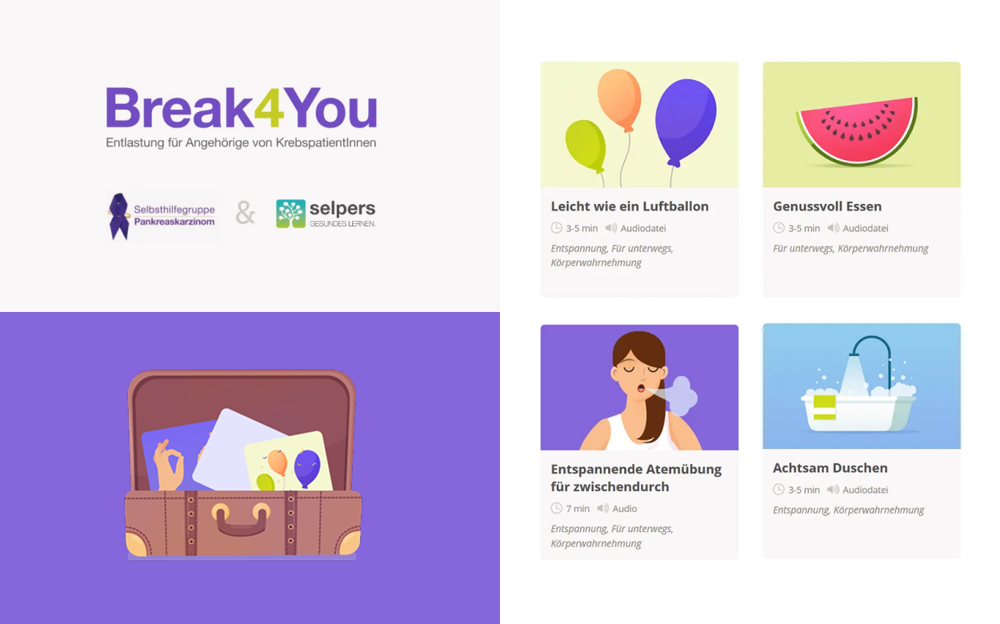

Martina Schubhart
000
For me, great design starts with understanding. I enjoy asking questions and understanding what a project is really trying to communicate before thinking about visual solutions. From there, I develop visual concepts and art direction that make complex information easier to understand. Whether I'm working on a digital product or an editorial publication, my goal is always the same: to create communication that people understand and remember.
Over the past 15 years, I've worked across digital products, editorial design and corporate communication for international brands and purpose-driven organisations. I enjoy working closely with strategists, writers and developers because the best ideas usually come from different perspectives.
I hold a bachelors degree in "Media Technology and Design" and more than 15 years of experience across digital and editorial design. Over the years, my work has grown from hands-on design and web development into visual concept development, art direction and design systems. I work mainly with Figma and Adobe Creative Cloud, and I love collaborating closely with developers, or even Claude Code, from early concepts through to final implementation to make sure the final result matches the original idea.